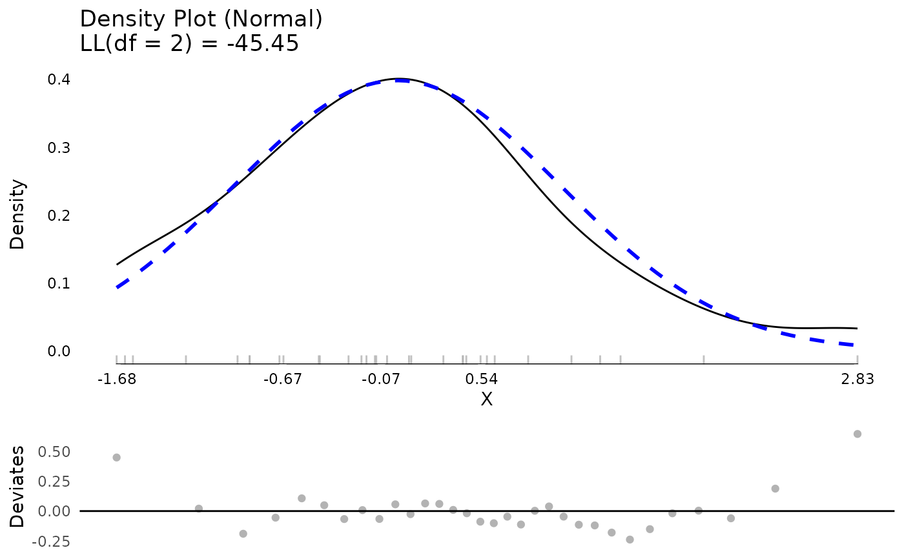
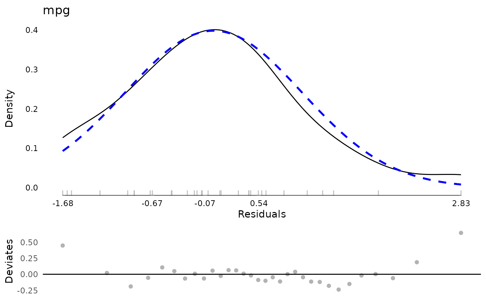
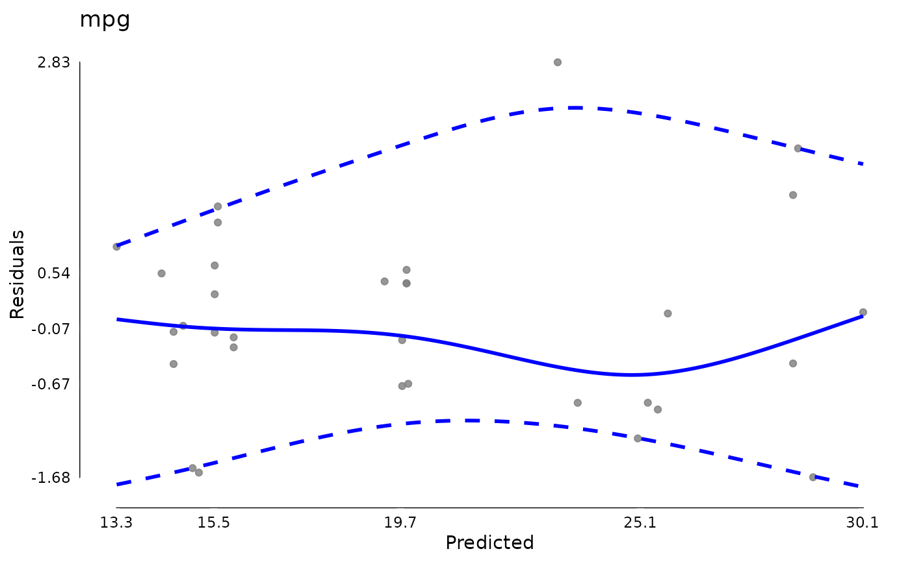
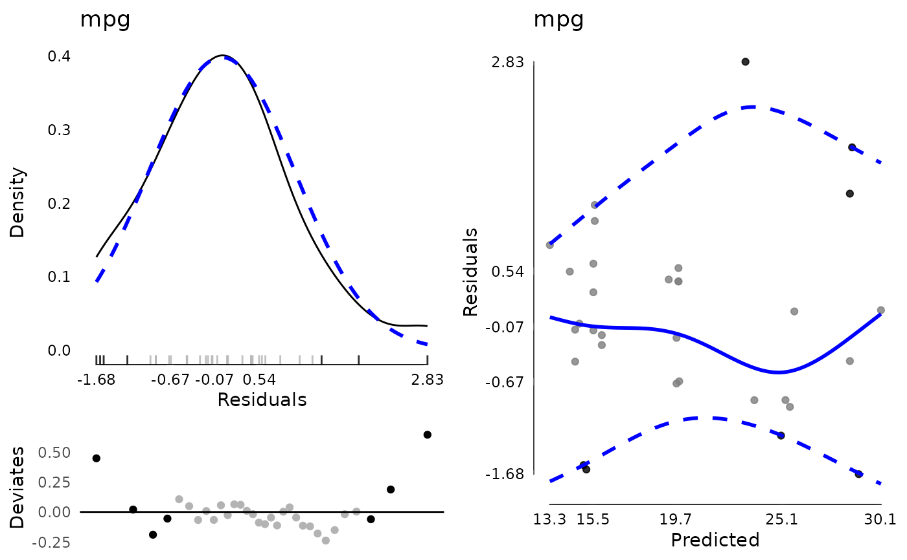

A set of functions to calculate
model diagnostics on models, including constructors,
a generic function, a test of whether an object is of the
modelDiagnostics class, and methods.
Usage
modelDiagnostics(object, ...)
as.modelDiagnostics(x)
is.modelDiagnostics(x)
# S3 method for class 'lm'
modelDiagnostics(
object,
ev.perc = 0.001,
robust = FALSE,
distr = "normal",
standardized = TRUE,
...
)Arguments
- object
A fitted model object, with methods for
model.frame,residandfitted.- ...
Additional arguments, passed to methods or
residualDiagnostics.- x
An object to test or a list to coerce to a
modelDiagnosticsobject.- ev.perc
A real number between 0 and 1 indicating the proportion of the theoretical distribution beyond which values are considered extreme values (possible outliers). Defaults to .001.
- robust
Whether to use robust mean and standard deviation estimates for normal distribution
- distr
A character string given the assumed distribution. Passed on to
testDistribution. Defaults to “normal”.- standardized
A logical whether to use standardized residuals. Defaults to
TRUEgenerally where possible but may depend on method.
Value
A logical (is.modelDiagnostics) or
a modelDiagnostics object (list) for
as.modelDiagnostics and modelDiagnostics.
Examples
testm <- stats::lm(mpg ~ hp * factor(cyl), data = mtcars)
md <- modelDiagnostics(testm)
plot(md$residualDiagnostics$testDistribution)

md$extremeValues
#> Empty data.table (0 rows and 3 cols): mpg,Index,EffectType
plot(md)


md <- modelDiagnostics(testm, ev.perc = .1)
md$extremeValues
#> mpg Index EffectType
#> <num> <int> <char>
#> 1: 24.4 8 Residuals
#> 2: 10.4 15 Residuals
#> 3: 10.4 16 Residuals
#> 4: 32.4 18 Residuals
#> 5: 33.9 20 Residuals
#> 6: 21.5 21 Residuals
#> 7: 30.4 28 Residuals
plot(md, ncol = 2)

testdat <- data.frame(
y = c(1, 2, 2, 3, 3, NA, 9000000, 2, 2, 1),
x = c(1, 2, 3, 4, 5, 6, 5, 4, 3, 2))
modelDiagnostics(
lm(y ~ x, data = testdat, na.action = "na.omit"),
ev.perc = .1)$extremeValues
#> y Index EffectType
#> <num> <int> <char>
#> 1: 9e+06 7 Residuals
modelDiagnostics(
lm(y ~ x, data = testdat, na.action = "na.exclude"),
ev.perc = .1)$extremeValues
#> y Index EffectType
#> <num> <int> <char>
#> 1: 9e+06 7 Residuals
## clean up
rm(testm, md, testdat)